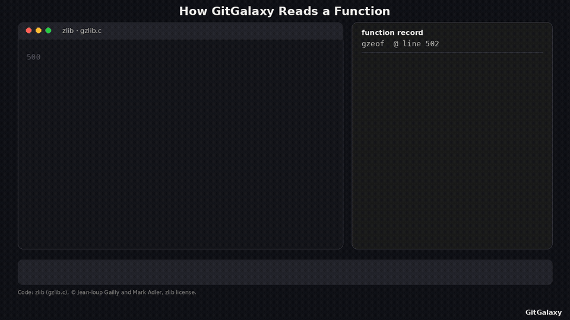
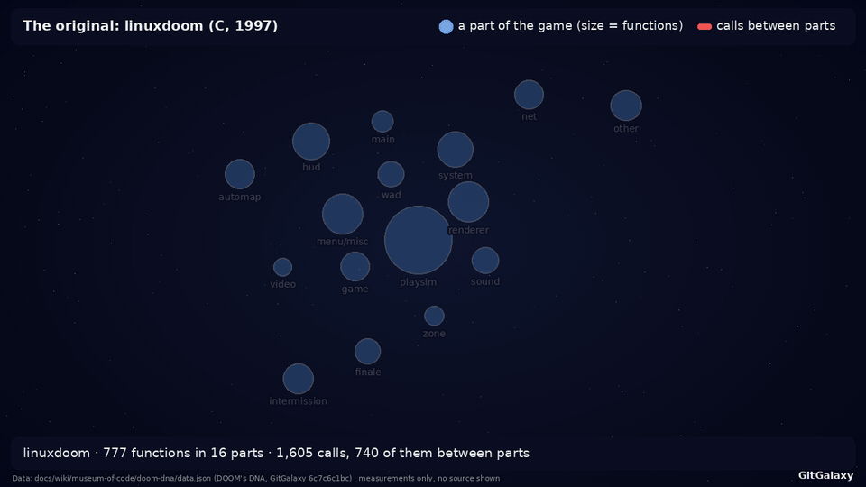

Loading...
55 programs measured: 41 DOOM descendants, 5 preregistered held-out DOOM-E5 targets, and 9 permissive controls across C, Go, Rust, Python, Scheme, COBOL, Fortran, Java, C#, Kotlin, and SQL. Strip every identifier and you can still trace who copied whom.
linuxdoom. Each name is sized by how many functions it has. Tap any name to open its profile and 16-track DNA gene map.composition mode + Fused Gromov–Wasserstein + delta offset + 3-hop extension) recovers 65–95% of 1-to-1 functions across C ports (mood 95.3%, puredoom 89.0%, doomgeneric 84.9%, sdl-doom 82.3%, doom-ascii 80.8%, doom-wasm 78.8%, chocolate-doom 65.0%).gore, flat directory layout, 0.2% filename match), Seed-and-Extend calibrates the C → Go translation vector and recovers 426 / 561 (75.9%) exact 1-to-1 functions (92.5% on Tier-1 seeds).lua, quake, quake2, carddemo-cobol-ctrl, c-raycasting, c-raycasting2, goom3d, bubbletea, macroquad) and 66 cross-pair permutations of novel/from-scratch/agentic repos, every non-DOOM pair scores 0–1 accidental hits.DOOM-E5, cydoomgeneric hit 100.0% Tier-1 (156/156, FGW_cost=0.313) against doomgeneric, while iron-doom (ported from Chocolate Doom into Bevy ECS) dropped to 0.0% (0/147).linuxdoom isolates Chocolate Doom's textscreen inside odamex, eternity, woof, and doom-wasm; src/hexen inside dsda-doom; MBF21 pointers between dsda-doom and woof; and hidden ancestry (doom-ios embedding prboom-plus, sdl-doom matching doomgeneric).linuxdoom's call graph discovers 16 organic call-graph tracks directly from call edges, so single-header (puredoom) and flat-dir (gore) ports light up the exact systems they belong to.

gore, 92.5% Tier-1)iron-doom also drops to 0.0%linuxdoom's edges, with horizontal transfers highlightedFirst, the old-fashioned way. Before trusting a machine that never reads code, we read it: we compared every descendant's source text with the original's, function by function. That gives the ground truth for everything that follows. Then, in the next part, we throw the text away.
Start with the obvious way to trace a program's ancestry: look at what its functions are called. It does not work as well as you'd think. Chocolate Doom, whose whole mission is an accurate reproduction of the original "including bugs", keeps 86% of the original's function names, but only 33% of those functions still contain the same code. Doom Retro keeps 69% of the names and just 0.2% of the code. GZDoom, a heavily modernised engine, keeps 32% of the names and 0.2% of the code.
Chocolate Doom keeps 86% of DOOM's function names, and 33% of the code inside them.
Averages hide the fun part, which is following one function through the whole family. The original has 662 functions big enough to score. Pick one below and see what became of it in every descendant.
Pick a famous one, or type any of the original's 662 functions. Each tile is one descendant; its colour is what became of that function there. Tap a tile to open that descendant at the bottom of the page.
So skip the names. The engine we used records, for every function, dozens of measurements: its length, its branches, its inputs, what it touches, and which other functions it calls. A companion tool then hunts for "look-alikes": functions in a descendant whose measurements match one of the original's too closely to be a coincidence. It never sees the code or the names.
gzeof, not DOOM code) as the engine reads it. Each highlight is
counted into the record on the right: 4 branches, 4 pointer uses, 1 state change, and so on, plus its size. The
last row is the function's fingerprint: yes or no for each kind of code. Look-alikes are functions whose records
match. The name is recorded but never used to match.Then we checked its work against the actual source text. 93% of the look-alikes it found really are copies, and it caught about two-thirds of all the copies the text comparison found.
The real test is what happens with programs that have nothing to do with DOOM. Quake and Quake II, id Software's own later games, and the Lua programming language are all written in C, like DOOM. They share between 0 and 0.6% of DOOM's shape. Chocolate Doom shares 48%. And the fingerprint is not tuned to DOOM: Quake and Quake II, which really are related, share 12.7% with each other.
Put those fingerprints together with each project's own account of where it came from and you can draw the whole family, the way biologists draw an evolutionary tree. One honest difference: a biologist infers who descends from whom. Here the family links are what each project says about itself; only the branch lengths are measured.
Drawn like an evolutionary tree: short branch = close copy, long branch = little code in common. Branch length is one minus the code shape a descendant shares with its parent. Who descends from whom is as each project states it, not inferred; the lengths are measured. Translations rewrite every line, so they all reach the far edge, even the ones that kept DOOM's design; that is the next part of the story. Hover a name for its numbers; click to open it below.
Swipe sideways to see the whole tree.
Translations are the hard case. Rewrite DOOM in Go and every line changes, every function gets a new name, and the look-alike hunt finds nothing. So what, if anything, survives?
We tried a blind test. DOOM's code is organised into 16 parts: the renderer, the monsters and physics, the sound, the status bar and so on. We hid every name and file path in a translation and asked the engine to sort each function into one of those parts using only its shape and who it calls. Then we checked where the names say it belongs.
For the Go translation, the engine sorts 60% of the functions correctly; shuffled labels manage 20%. Among the quarter of functions it was most sure about, it was right 99% of the time. Scramble the Go program's wiring, keeping how many calls each function makes, and it drops to 39%: the wiring itself carries much of the signal.
Hide every name, and a Go port's functions still land in the right part of DOOM 60% of the time. Guessing manages 20%.
If the wiring carries the signal, look at the wiring directly. For every descendant we drew a map of which parts of the game call which, and compared it with the original's map. To know how much of the match is real, we also scored each program against itself with its functions shuffled at random between the parts. The gap between the two is the design that survived.
The Scheme and Go translations keep the original's wiring as far above chance as the closest C copy, doom-wasm, and further than Chocolate Doom itself. The Dart translation keeps some. The Fortran, Java, Kotlin and C# translations keep none, and programs written from scratch, or not related to DOOM at all, sit at chance, as they should. Don't take our word for it: draw the maps yourself.
Each circle is a part of the game, placed where the original's wiring puts it; each line is calls between two parts, thicker for more. A descendant wired like the original draws the same lines. Pick one.
All 16 tracks are communities discovered directly from linuxdoom's call graph (zero filename rules). Horizontal additions (textscreen, src/hexen, DG_*) and port-unique functions are placed into the call-graph system they connect to: Grey = unique to that port; colored bands = Seed-and-Extend or structural twin matches to an ancestor/donor. Note: doom3-bfg, doomsday, and gzdoom (>10k funcs) are omitted from the dense FGW pass.
Loading dna_tracks_data.json (49 targets)...
Unsupervised Seed-and-Extend recovery (name precision after 3-hop extension & Tier-1 seeds) across C ports, Go (gore), DOOM-E5 held-out targets, and 9 permissive controls — plus cross-branch horizontal borrows.
Every descendant, held-out DOOM-E5 target, and permissive control has its own profile: Seed-and-Extend recovery, 16-track DNA gene map, famous functions, wiring, and history. Pick one from the list, or compare any two.
Loading...
Loading...
Written by Joe Esquibel, using the GitGalaxy code-scanning engine.
Every number on this page comes from public code and can be rebuilt from it. Here is everything you need to examine the data and the methods, or to run them yourself.
Found something that doesn't add up? Open an issue on the GitGalaxy repository.